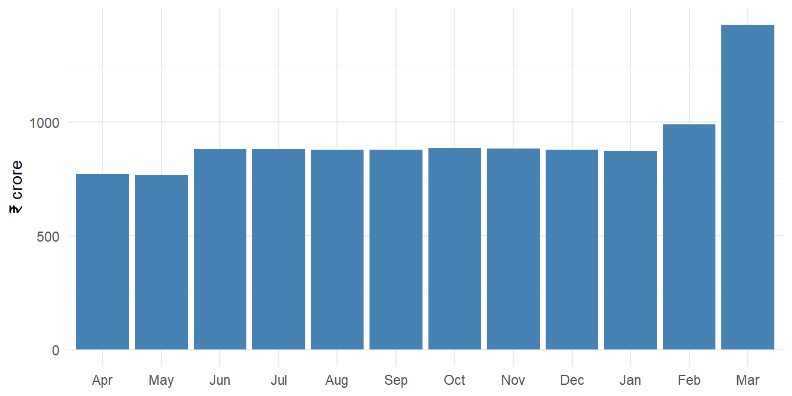

17 Large Data with DuckDB and data.table
Audit data keeps getting bigger. A year of treasury vouchers of a State, the GST returns of a commissionerate, the billing records of an electricity distribution company, or the transactions of a scheme paid through PFMS easily run into crores of rows. Excel stops at 10,48,576 rows. R does better, but it normally reads the whole data into the computer’s memory (RAM) before doing anything. With a few crore rows, that is slow, and on an ordinary office laptop it may not be possible at all.
DuckDB solves this problem. It is a database engine that runs inside R, with nothing to set up, no server, and no database administrator. It can read CSV and Parquet files directly from the disk, without loading them into R, and it is remarkably fast. Best of all, with the package dbplyr we use the same dplyr verbs we already know (Chapter 13). We write filter(), summarise() and left_join() as usual, and dbplyr quietly translates them into SQL, the language of databases, for DuckDB to run.
Later in the chapter we also meet data.table, a package that makes work on data in memory very fast, and compare the approaches.
Think of it like this. R is the officer who decides what is to be examined. DuckDB is a very fast assistant in the record room. Instead of having every register carried to the officer’s table, the officer sends instructions, the assistant goes through the registers where they lie, and brings back only the summary asked for.
Prerequisites
Install them once with install.packages(c("duckdb", "dbplyr")).
17.1 Our data, a year of treasury vouchers
The treasuries of a State have given us the payment vouchers of the financial year 2024-25, as 12 monthly CSV files. Each row is one payment: the voucher number, the drawing and disbursing officer (DDO) who drew it, the date, the type of bill, the payee, the payee’s bank account and the amount. There are 24 lakh rows in all, more than twice what Excel can open.
The code below creates the files in a temporary folder. In a real audit the files would arrive from the department, and this step would not exist. Two kinds of irregularity are planted, which we will find later.
Code to create the 12 monthly voucher files
set.seed(2025)
n <- 2400000
ddo_master <- tibble(
ddo_code = sprintf("DDO%04d", 1:800),
treasury = sample(sprintf("TR%02d", 1:20), 800, TRUE),
department = sample(c("Education", "Health", "Police", "Revenue", "Public Works",
"Agriculture", "Rural Development", "Water Resources"), 800, TRUE)
)
# More payments towards the end of the year, especially in March
month_wt <- c(7, 7, 8, 8, 8, 8, 8, 8, 8, 8, 9, 13) # April to March
dates <- seq(as.Date("2024-04-01"), as.Date("2025-03-31"), by = "day")
fy_month <- (month(dates) - 4) %% 12 + 1
date_wt <- month_wt[fy_month] / tabulate(fy_month)[fy_month]
vouchers <- tibble(
voucher_no = sprintf("V%08d", 1:n),
ddo_code = sample(ddo_master$ddo_code, n, TRUE),
voucher_date = sample(dates, n, TRUE, prob = date_wt),
bill_type = sample(c("Salary", "Contingent", "Works", "Grant", "Pension"), n, TRUE,
prob = c(0.45, 0.25, 0.10, 0.10, 0.10)),
payee_id = sprintf("P%07d", sample(1:400000, n, TRUE)),
amount = round(rlnorm(n, log(25000), 1.1))
) |>
mutate(payee_account = paste0("AC", substr(payee_id, 2, 8), "0"))
# Planted 1. Contingent and works bills paid twice, under a new voucher number
dup <- vouchers |>
filter(bill_type %in% c("Contingent", "Works")) |>
slice_sample(n = 400) |>
mutate(voucher_no = sprintf("V9%07d", row_number()))
# Planted 2. Salaries of 14 "employees" in three DDOs credited to one bank account
ghost <- vouchers |>
filter(bill_type == "Salary") |>
slice_sample(n = 14 * 12) |>
mutate(payee_id = rep(sprintf("P8%06d", 1:14), 12),
ddo_code = rep(c("DDO0117", "DDO0342", "DDO0655"), length.out = n()),
payee_account = "AC00451230",
amount = round(runif(n(), 38000, 52000)))
vouchers <- bind_rows(vouchers, dup, ghost) |> arrange(voucher_date)
# Write one CSV file per month, as received from the treasuries
data_dir <- file.path(tempdir(), "treasury")
dir.create(data_dir, showWarnings = FALSE)
vouchers |>
split(format(vouchers$voucher_date, "%Y_%m")) |>
iwalk(\(d, m) write_csv(d, file.path(data_dir, paste0("vouchers_", m, ".csv"))))
rm(vouchers) # from here on, the data exist only as files on the diskLet us see what we have received.
csv_files <- list.files(data_dir, pattern = "^vouchers_.*csv$", full.names = TRUE)
tibble(file = basename(csv_files), size_mb = round(file.size(csv_files) / 1e6, 1))# A tibble: 12 × 2
file size_mb
<chr> <dbl>
1 vouchers_2024_04.csv 10.5
2 vouchers_2024_05.csv 10.5
3 vouchers_2024_06.csv 12.1
4 vouchers_2024_07.csv 12.1
5 vouchers_2024_08.csv 12.1
6 vouchers_2024_09.csv 12.1
7 vouchers_2024_10.csv 12.1
8 vouchers_2024_11.csv 12.1
9 vouchers_2024_12.csv 12
10 vouchers_2025_01.csv 12
11 vouchers_2025_02.csv 13.6
12 vouchers_2025_03.csv 19.6Twelve files, 151 MB in all. Notice that we removed the data from R’s memory at the end of the code above. From now on, we work on the files directly.
17.2 Connecting to DuckDB
First we start DuckDB and connect to it. dbConnect() comes from the package DBI, which works the same way for every database R can talk to.
con <- dbConnect(duckdb())This creates a database in memory, which disappears when we disconnect. Now we tell DuckDB where the files are. A single line of SQL creates a view named vouchers, a name for “all the rows in all the files matching this pattern”. The * in the file name matches every month.
csv_pattern <- file.path(normalizePath(data_dir, winslash = "/"), "vouchers_*.csv")
dbExecute(con, paste0("CREATE VIEW vouchers AS SELECT * FROM read_csv('", csv_pattern, "')"))[1] 0(normalizePath(..., winslash = "/") writes the folder path with forward slashes, which DuckDB prefers, even on Windows.) Finally, tbl() gives us an R object pointing at the view, which we can use like a data frame.
vouchers <- tbl(con, "vouchers")
vouchers# A query: ?? x 7
# Database: DuckDB 1.5.6 [Anil@Windows 10 x64:R 4.5.2/:memory:]
voucher_no ddo_code voucher_date bill_type payee_id amount payee_account
<chr> <chr> <date> <chr> <chr> <dbl> <chr>
1 V00000471 DDO0580 2024-04-01 Salary P0005033 19806 AC00050330
2 V00000710 DDO0194 2024-04-01 Salary P0188115 24896 AC01881150
3 V00000948 DDO0512 2024-04-01 Salary P0290244 26076 AC02902440
4 V00001349 DDO0074 2024-04-01 Works P0226584 185274 AC02265840
5 V00002042 DDO0277 2024-04-01 Contingent P0299634 36128 AC02996340
6 V00002913 DDO0211 2024-04-01 Pension P0244040 16991 AC02440400
7 V00003324 DDO0791 2024-04-01 Grant P0050727 17697 AC00507270
8 V00003476 DDO0218 2024-04-01 Grant P0023304 11740 AC00233040
9 V00003543 DDO0078 2024-04-01 Salary P0278314 3648 AC02783140
10 V00003697 DDO0434 2024-04-01 Salary P0295210 3762 AC02952100
# ℹ more rowsIt looks like a tibble, with two differences. The header says # Source: SQL and the database, and the number of rows is shown as ??. DuckDB has only peeked at the first few rows to show us a preview. It has not read the files yet.
17.3 Lazy queries and collect()
This is the one new idea in this chapter. A table from a database is lazy. When we write dplyr code on it, nothing is computed. dbplyr only writes down what we want. The work is done when we ask to see the result, and then only the result comes into R.
Let us count the rows.
row_time <- system.time(
n_rows <- vouchers |> count() |> pull(n)
)
n_rows[1] 2400568DuckDB read all twelve files and counted 2,400,568 rows in 0.36 seconds. Now a real summary, the number and value of payments in each month.
# A query: ?? x 4
# Database: DuckDB 1.5.6 [Anil@Windows 10 x64:R 4.5.2/:memory:]
# Ordered by: year, month
year month payments crore
<dbl> <dbl> <dbl> <dbl>
1 2024 4 167934 772.
2 2024 5 167501 767.
3 2024 6 192435 880.
4 2024 7 192070 881.
5 2024 8 192671 877.
6 2024 9 192538 877.
7 2024 10 192201 884.
8 2024 11 192310 884.
9 2024 12 191729 878.
10 2025 1 191369 873.
11 2025 2 215955 989.
12 2025 3 311855 1428.Printing a lazy query shows the first rows of the result, which is enough to check that it is right. To bring the full result into R as an ordinary tibble, for a chart or for further work, we use collect().

What does dbplyr send to DuckDB? show_query() prints the SQL it has written for us.
show_query(monthly)<SQL>
SELECT "year", "month", COUNT(*) AS payments, SUM(amount) / 10000000.0 AS crore
FROM (
SELECT
*,
EXTRACT(year FROM voucher_date) AS "year",
EXTRACT(MONTH FROM voucher_date) AS "month"
FROM vouchers
) AS q01
GROUP BY "year", "month"
ORDER BY "year", "month"We never have to write this ourselves. But it is worth a look. Auditors who know SQL, or the “equations” of tools like IDEA and ACL, will recognise SELECT, GROUP BY and ORDER BY. And reading the SQL is a good way to confirm that dbplyr has understood what we meant.
In R, sum(c(5, NA)) is NA, as we saw in Chapter 1. In SQL, missing values (called NULL) are simply left out of sums and averages. dbplyr warns about this the first time, unless we write na.rm = TRUE, as we did above, to show that we know. Keep the difference in mind. A total from a database never tells you that some amounts were missing, so count the missing values separately with sum(is.na(amount)).
17.4 Audit tests on the full data
Now let us run some real tests, on all 24 lakh rows, exactly as we would on a small data frame.
17.4.1 Which DDOs rushed their spending into March?
march_rush <- vouchers |>
summarise(total = sum(amount, na.rm = TRUE),
march = sum(if_else(month(voucher_date) == 3, amount, 0), na.rm = TRUE),
.by = ddo_code) |>
mutate(march_share = march / total) |>
slice_max(march_share, n = 10) |>
collect()
march_rush |> mutate(across(c(total, march), \(x) round(x / 1e5, 1)),
march_share = round(100 * march_share, 1))# A tibble: 10 × 4
ddo_code total march march_share
<chr> <dbl> <dbl> <dbl>
1 DDO0070 1367. 232 17
2 DDO0469 1440. 243. 16.8
3 DDO0687 1463. 243. 16.6
4 DDO0045 1344. 216 16.1
5 DDO0731 1378. 220 16
6 DDO0583 1308. 208 15.9
7 DDO0231 1298. 206. 15.9
8 DDO0166 1388. 220. 15.9
9 DDO0374 1424. 225 15.8
10 DDO0700 1370. 216. 15.8Across the State, March accounts for 13% of the year’s payments. These DDOs spent 16% or more in March alone, and would be the first to examine for the rush of expenditure.
17.4.2 Duplicate payments
A same-same-same test (Chapter 32): the same bank account, the same amount and the same date, under different voucher numbers. We restrict it to contingent and works bills, where a repeated payment is suspicious. (Salaries and pensions legitimately repeat the same amount every month, though not on the same date.)
# A tibble: 1 × 2
groups excess_paid
<dbl> <dbl>
1 400 18090218400 groups of payments were made more than once, with ₹1.81 crore paid in excess. To examine them, we bring only these rows into R. A join with the full table gives the voucher details, and still only the matching rows are collected.
[1] 800head(dup_vouchers, 6)# A tibble: 6 × 7
voucher_no ddo_code voucher_date bill_type payee_id amount payee_account
<chr> <chr> <date> <chr> <chr> <dbl> <chr>
1 V90000293 DDO0319 2024-05-05 Contingent P0000121 3921 AC00001210
2 V01632177 DDO0319 2024-05-05 Contingent P0000121 3921 AC00001210
3 V02344665 DDO0144 2024-10-25 Contingent P0000664 34458 AC00006640
4 V90000317 DDO0144 2024-10-25 Contingent P0000664 34458 AC00006640
5 V00910001 DDO0147 2024-12-06 Contingent P0001019 8647 AC00010190
6 V90000304 DDO0147 2024-12-06 Contingent P0001019 8647 AC00010190 17.4.3 One bank account, many employees
Salaries of different employees should go to different bank accounts. An account receiving the salary of several persons may indicate ghost employees, whose pay is drawn into one person’s account.
shared_accounts <- vouchers |>
filter(bill_type == "Salary") |>
summarise(employees = n_distinct(payee_id), ddos = n_distinct(ddo_code),
amount = sum(amount, na.rm = TRUE), .by = payee_account) |>
filter(employees > 1) |>
arrange(desc(employees)) |>
collect()
shared_accounts# A tibble: 1 × 4
payee_account employees ddos amount
<chr> <dbl> <dbl> <dbl>
1 AC00451230 15 4 7560303One account, AC00451230, received the salary of 15 different payees, drawn by 4 DDOs, ₹75.6 lakh in the year. The next step is to collect its vouchers, and ask the DDOs for the service records of these “employees”.
# A tibble: 8 × 3
ddo_code payee_id n
<chr> <chr> <dbl>
1 DDO0096 P0045123 1
2 DDO0117 P8000001 4
3 DDO0117 P8000002 4
4 DDO0117 P8000003 4
5 DDO0117 P8000004 4
6 DDO0117 P8000005 4
7 DDO0117 P8000006 4
8 DDO0117 P8000007 4The first row is the account’s genuine holder, a single payee in one DDO. The other 14 payees, in three other DDOs, all have their salaries credited to this one account. The !! in front of sa$payee_account tells dbplyr to insert the value of this R object into the query, rather than look for a column of that name in the database.
17.5 Joining with data in R
Often a small table lives in R, like the DDO master with each DDO’s department, and we want to join it with the large table in the database. copy_to() sends the small table to DuckDB, and the join is then done there.
# A tibble: 8 × 2
department crore
<chr> <dbl>
1 Health 1654.
2 Agriculture 1480.
3 Rural Development 1413.
4 Education 1328.
5 Public Works 1309.
6 Revenue 1278.
7 Police 1266.
8 Water Resources 1263.All the join checks of Chapter 14 still apply. Compare row counts and totals before and after, and use anti_join() to find vouchers whose DDO code is not in the master.
17.6 When dbplyr cannot translate
dbplyr knows how to translate most dplyr verbs, and many common functions, like if_else(), case_when(), year(), month(), n_distinct(), str_detect() and round(), into SQL. But it cannot translate a function it does not know, such as one we wrote ourselves. Remember the fin_year() function of Section 16.10.
Error in `collect()`:
! Failed to collect lazy table.
Caused by error in `DBI::dbSendQuery()`:
! Catalog Error: Scalar Function with name fin_year does not exist!
Did you mean "isoyear"?
LINE 1: SELECT *, fin_year(voucher_date) AS fy
^
ℹ Context: rapi_prepare
ℹ Error type: CATALOGdbplyr does not look inside our function. It passes the name fin_year on to DuckDB as it is, and DuckDB has never heard of it. (Even if we copied the code in, sprintf() has no translation either.) There are two ways out.
-
Filter and summarise in the database, then
collect(), then use any R function on the much smaller result. This is the usual pattern: let DuckDB cut the data down, and let R do the rest. -
Rewrite the logic with functions dbplyr knows. Here,
if_else(),year()andmonth()are enough to compute the starting year of the financial year inside the database.
# A tibble: 1 × 2
fy_start n
<dbl> <dbl>
1 2024 240056817.7 Writing SQL directly
Those who know SQL can send it straight to DuckDB with dbGetQuery(), which returns a data frame. This is also how audit queries written for other databases can be reused.
dbGetQuery(con, "
SELECT bill_type, COUNT(*) AS payments, ROUND(SUM(amount) / 1e7, 1) AS crore
FROM vouchers
GROUP BY bill_type
ORDER BY crore DESC
") bill_type payments crore
1 Salary 1080416 4947.9
2 Contingent 600993 2744.6
3 Grant 240263 1101.6
4 Works 239308 1100.4
5 Pension 239588 1096.617.8 Parquet, a better format for large data
CSV files are simple, but large and slow to read, because every number is stored as text. Parquet is a file format designed for large data. It stores each column together, compressed, with its type. DuckDB can write and read it directly.
parquet_file <- file.path(normalizePath(data_dir, winslash = "/"), "vouchers_2024_25.parquet")
dbExecute(con, paste0("COPY (SELECT * FROM vouchers) TO '", parquet_file, "' (FORMAT parquet)"))[1] 2400568 csv_mb parquet_mb
151 58 The same data take 58 MB instead of 151 MB. And queries are faster still. read_parquet() takes the place of read_csv() in the view.
dbExecute(con, paste0("CREATE VIEW vouchers_pq AS SELECT * FROM read_parquet('", parquet_file, "')"))[1] 0vouchers_pq <- tbl(con, "vouchers_pq")
pq_time <- system.time(
by_type <- vouchers_pq |> count(bill_type) |> arrange(bill_type) |> collect()
)
by_type# A tibble: 5 × 2
bill_type n
<chr> <dbl>
1 Contingent 600993
2 Grant 240263
3 Pension 239588
4 Salary 1080416
5 Works 239308This query took 0.05 seconds.
When a large data set arrives, keep the original files untouched, record their hashes as in Section 8.6, and convert a working copy to Parquet once. All further analysis then runs on the Parquet file, which is smaller and much faster, and the original files remain as received, for evidence.
17.9 data.table, fast in memory
DuckDB is one answer to large data. The other well-known answer in R is the package data.table. It takes a different approach. It does load the data into memory, like read_csv(). It reads files somewhat faster, but its real strength is what comes after: summaries over many groups, joins and new columns, computed at remarkable speed. For data that fits in the computer’s memory, which with today’s laptops means up to a few crore rows, data.table is often the fastest tool in R. Many government and research teams use it for exactly that reason.
data.table has its own functions named year(), month(), quarter() and a few others, which mask the lubridate functions of the same names once it is loaded. They give the same answers for dates, so nothing breaks here, but R prints a message about the conflict. If you need to be sure which one is used, write lubridate::year() or data.table::year(), as in Section 5.1.
17.9.1 Reading files with fread()
fread(), “fast read”, reads a CSV file using all the processor cores of the computer, and works out the column types by itself. To read our 12 files, we read each with fread() and stack them with rbindlist(), the data.table version of bind_rows().
fread_time <- system.time(
dt <- rbindlist(lapply(csv_files, fread))
)
fread_time["elapsed"]elapsed
6.13 dim(dt)[1] 2400568 7All 24 lakh rows were read in 6.1 seconds, and take about 320 MB of memory. The result is a data.table, which is also a data frame, so every function that works on data frames works on it too.
17.9.2 The DT[i, j, by] syntax
data.table has a compact syntax of its own, inside square brackets.
DT[i, j, by]Read it as: take the data.table DT, keep the rows i, compute j, grouped by. Those who know SQL will see WHERE, SELECT and GROUP BY. Inside the brackets, column names are used directly, without $, and .N stands for the number of rows. .() is a short form of list(), used to name the results.
Our monthly summary becomes
year month payments crore
<int> <int> <int> <num>
1: 2024 4 167934 771.8011
2: 2024 5 167501 766.9508
3: 2024 6 192435 880.0841
4: 2024 7 192070 881.0512
5: 2024 8 192671 877.2173
6: 2024 9 192538 877.0462
7: 2024 10 192201 884.4933
8: 2024 11 192310 884.3129
9: 2024 12 191729 878.3623
10: 2025 1 191369 873.2046
11: 2025 2 215955 988.9696
12: 2025 3 311855 1427.5624The second pair of brackets, [order(year, month)], works on the result of the first. This chaining of brackets plays the part of the pipe.
17.9.3 The same audit tests
The duplicate payments test. %chin% is a fast version of %in% for text.
groups excess_paid
<int> <num>
1: 400 18090218One bank account, many employees. Here we work in two steps. First we keep the distinct pairs of account and payee with unique(), and count the payees of each account with .N. Then, only for the few accounts with more than one payee, we compute the details. uniqueN() counts distinct values, like n_distinct().
account_payee <- unique(dt[bill_type == "Salary", .(payee_account, payee_id)])
shared <- account_payee[, .N, by = payee_account][N > 1]
dt[bill_type == "Salary" & payee_account %chin% shared$payee_account,
.(employees = uniqueN(payee_id), ddos = uniqueN(ddo_code), amount = sum(amount)),
by = payee_account][order(-employees)] payee_account employees ddos amount
<char> <int> <int> <int>
1: AC00451230 15 4 7560303Why two steps? data.table computes sum(), mean() and .N within groups with special optimised code, but not uniqueN(). With about four lakh accounts, uniqueN() would be called four lakh times, which takes close to a minute. Counting the distinct pairs first takes a fraction of a second. When a grouped calculation is unexpectedly slow, see whether the work can be reduced first, like this.
The results are the same as from DuckDB, as they must be. Joining with the DDO master can be done with merge(), which works like left_join() when all.x = TRUE.
merge(dt, as.data.table(ddo_master), by = "ddo_code", all.x = TRUE)[
, .(crore = sum(amount) / 1e7), by = department][order(-crore)] department crore
<char> <num>
1: Health 1654.300
2: Agriculture 1479.712
3: Rural Development 1412.774
4: Education 1328.290
5: Public Works 1308.682
6: Revenue 1278.077
7: Police 1265.924
8: Water Resources 1263.297
17.9.4 Adding columns by reference with :=
In dplyr, mutate() returns a new copy of the data with the extra column. With 24 lakh rows, every copy costs time and memory. data.table’s := operator adds or changes a column in place, without copying. Here we add the financial year, using fifelse(), data.table’s fast if_else().
fy_start N
<num> <int>
1: 2024 2400568Notice that we did not write dt <- .... The column was added to dt itself.
Because := changes the data in place, the change also shows up in any other name that points to the same data. dt2 <- dt does not make a copy in data.table. Use dt2 <- copy(dt) when you need a separate copy to modify.
17.9.5 dplyr and data.table side by side
| Task | dplyr | data.table |
|---|---|---|
| Keep rows | filter(df, amount > 1e5) |
dt[amount > 1e5] |
| Choose columns | select(df, ddo_code, amount) |
dt[, .(ddo_code, amount)] |
| Summarise by group | summarise(df, total = sum(amount), .by = ddo_code) |
dt[, .(total = sum(amount)), by = ddo_code] |
| Count rows by group | count(df, bill_type) |
dt[, .N, by = bill_type] |
| Add a column | mutate(df, lakh = amount / 1e5) |
dt[, lakh := amount / 1e5] |
| Sort | arrange(df, desc(amount)) |
dt[order(-amount)] |
| Join | left_join(df, ddo, by = "ddo_code") |
merge(dt, ddo, by = "ddo_code", all.x = TRUE) |
If you prefer dplyr’s verbs but want data.table’s speed, the package dtplyr translates dplyr code into data.table code, much as dbplyr translates it into SQL.
17.10 How much faster?
Let us compare the approaches on two jobs: reading the 12 CSV files, and then running the duplicate payments test, which groups 24 lakh rows by three columns.
dup_test_dplyr <- function(df) {
df |>
filter(bill_type %in% c("Contingent", "Works")) |>
count(payee_account, amount, voucher_date) |>
filter(n > 1)
}
# readr and dplyr
read_readr <- system.time(all_rows <- read_csv(csv_files, show_col_types = FALSE))
dup_dplyr <- system.time(dup_test_dplyr(all_rows))
in_memory_mb <- as.numeric(object.size(all_rows)) / 1e6
rm(all_rows)
# data.table
read_dt <- system.time(dt <- rbindlist(lapply(csv_files, fread)))
dup_dt <- system.time(
dt[bill_type %chin% c("Contingent", "Works"), .N, by = .(payee_account, amount, voucher_date)][N > 1]
)
rm(dt)
# DuckDB, on the CSV files and on the Parquet file
dup_duck <- system.time(vouchers |> dup_test_dplyr() |> collect())
dup_pq <- system.time(vouchers_pq |> dup_test_dplyr() |> collect())Notice that the same function, dup_test_dplyr(), ran on a tibble in memory and on the DuckDB tables. That is the convenience of dbplyr.
| Approach | Reading the files (seconds) | Duplicate test (seconds) | Memory used by R |
|---|---|---|---|
| readr and dplyr | 5.9 | 8.7 | about 339 MB |
| data.table | 4.1 | 0.2 | about 320 MB |
| DuckDB on the CSV files | not needed | 0.36 | only the result |
| DuckDB on the Parquet file | not needed | 0.09 | only the result |
The times will differ on your computer, but the pattern will not. Reading is only somewhat faster with fread(), because most of the time goes in turning text into columns. The grouping is where data.table shines, many times faster than dplyr on the same data in memory. DuckDB needs no reading step at all, since it works on the files where they lie, and it is fastest of all on Parquet. As the data grows to several crore rows, read_csv() and even fread() may fail for lack of memory, while DuckDB works through the files on disk without trouble.
Which one to use?
| Situation | Good choice |
|---|---|
| Data fits comfortably in memory, and you like dplyr | dplyr, as in the rest of this book |
| Data fits in memory, but dplyr feels slow, or the same heavy job is run often | data.table |
| Data is larger than memory, or arrives as many large files | DuckDB with dbplyr |
| Data will be queried repeatedly over weeks | DuckDB, with the data in Parquet or a database file |
17.11 A database file for repeated work
So far, DuckDB lived in memory and read the files afresh for every query. For data we will query again and again, over days, we can keep a DuckDB database file. Give dbConnect() a file name, and load the data into a table once.
con <- dbConnect(duckdb(), dbdir = "treasury_2024_25.duckdb")
dbExecute(con, "CREATE TABLE vouchers AS SELECT * FROM read_parquet('vouchers_2024_25.parquet')")
# ... next day, in a new R session
con <- dbConnect(duckdb(), dbdir = "treasury_2024_25.duckdb")
vouchers <- tbl(con, "vouchers")Whichever way we connect, we disconnect at the end, which also frees the memory.
dbDisconnect(con)17.12 A suggested workflow
- Keep the original files untouched, and record their hashes.
-
Connect with
dbConnect(duckdb()), and create a view over the files withread_csv(), using a*pattern for many files. -
Point
tbl()at the view, and check a preview and the row count against the control totals received with the data. - Convert to Parquet if the data will be used more than once, and query that instead.
-
Write the analysis in
dplyr, as usual. Useshow_query()when in doubt. -
Filter and summarise in DuckDB, and
collect()only the small result, or the exceptions. -
Use R-only functions after
collect(), or rewrite them with translatable functions. - Disconnect at the end.
- DuckDB runs inside R and queries large CSV and Parquet files on disk, without loading them into memory.
- With dbplyr, we use the same
dplyrverbs; they are translated into SQL. - Database tables are lazy. Nothing happens until we print or
collect()the result. - Let DuckDB cut the data down, and bring only the result into R.
- Missing values are silently left out of SQL sums; check for them separately.
- Parquet files are smaller and faster than CSV; keep the originals for evidence.
- data.table is the fastest choice when the data fits in memory; DuckDB when it does not.
17.13 Summary of functions used
| Function | Package | What it does |
|---|---|---|
dbConnect(duckdb()), dbDisconnect()
|
DBI, duckdb | Start and close a DuckDB database, in memory or in a file |
dbExecute() |
DBI | Run an SQL command, like creating a view or writing Parquet |
dbGetQuery() |
DBI | Run an SQL query and get a data frame |
read_csv(), read_parquet() (inside SQL) |
DuckDB | Read CSV or Parquet files, including many files with a * pattern |
tbl() |
dplyr | Point at a table or view in the database |
collect() |
dplyr | Run the query and bring the result into R |
show_query() |
dplyr | Show the SQL that dbplyr has written |
copy_to() |
dplyr | Send a small R table to the database, for joins |
!! |
rlang | Insert the value of an R object into a database query |
fread(), rbindlist()
|
data.table | Read CSV files fast, and stack a list of tables |
DT[i, j, by], .N, .(), uniqueN(), %chin%
|
data.table | Filter, compute and group; count rows and distinct values |
:=, fifelse(), copy()
|
data.table | Add columns in place, fast if_else(), and make a true copy |
merge() |
base R, data.table | Join two tables |
normalizePath() |
base R | Write a folder path with forward slashes for DuckDB |
system.time() |
base R | Time a piece of code |